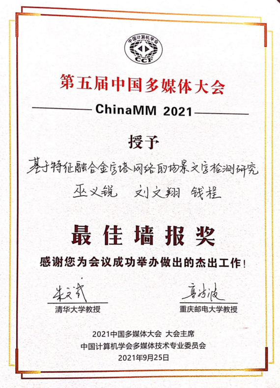
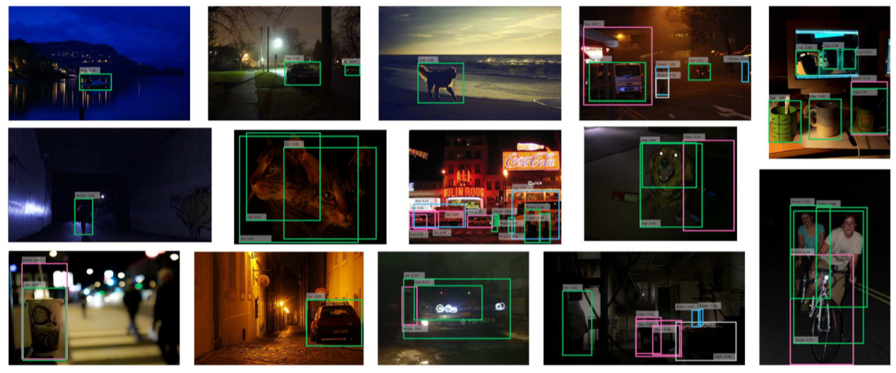
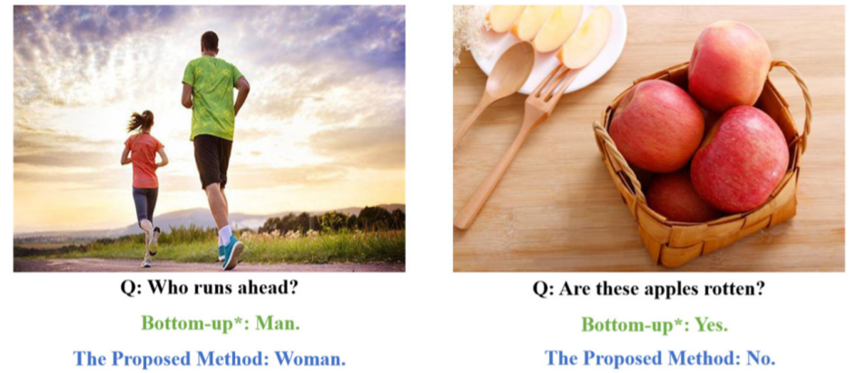
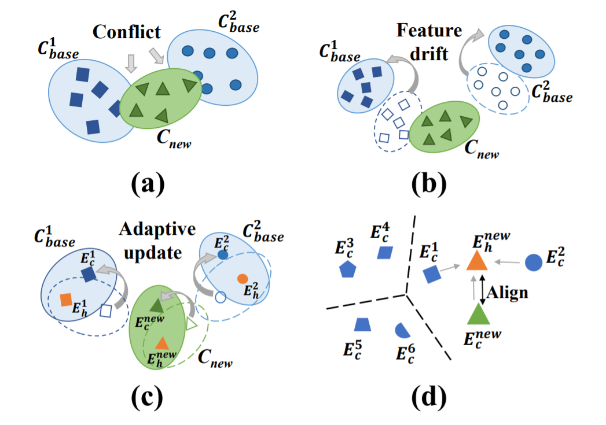
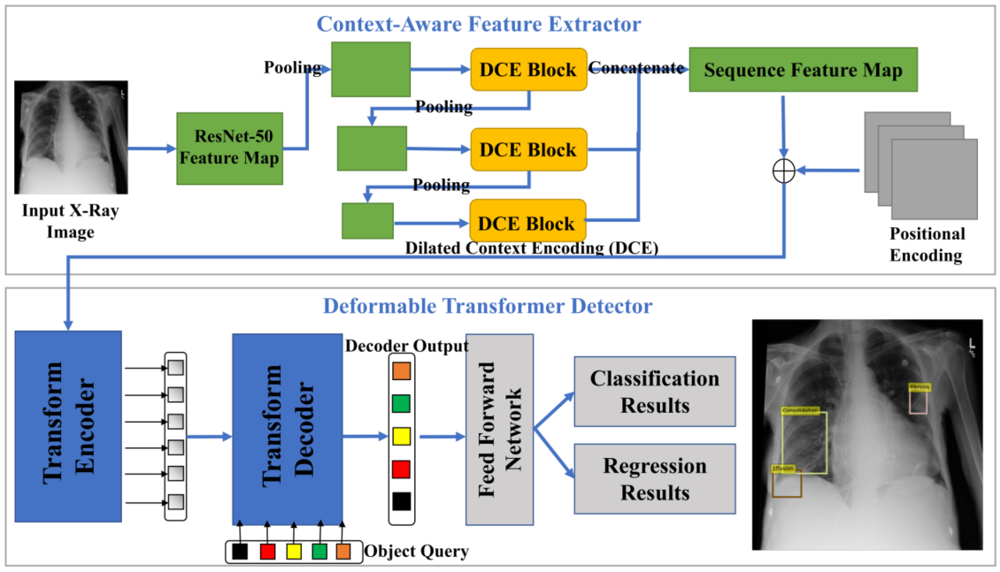
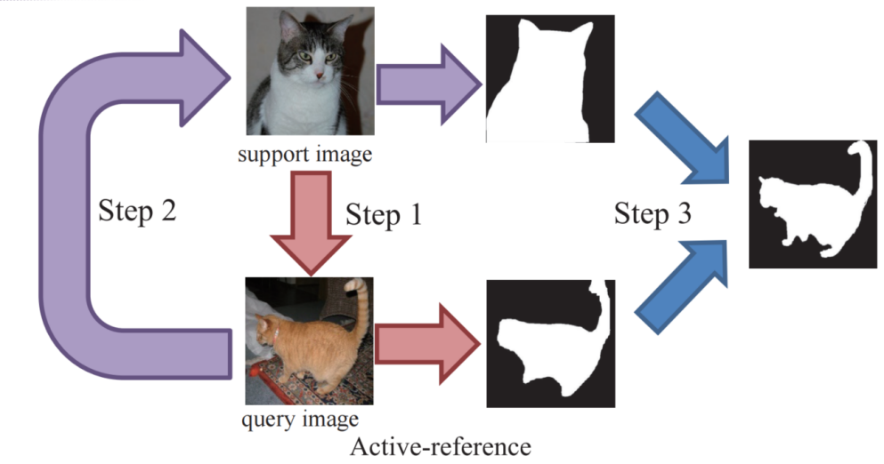

Yirui Wu
Associate Professor, IEEE/CCF/CSIG Memeber
Vice Chairman of CCF
YOCSEF Nanjing
College of Computer and Information, Hohai University
Email: wuyirui@hhu.edu.cn
Office: Rm4123, QinXue Building, Hohai University Jiangning District, Nanjing
[中文版本]

I am currently an Associate Professor at Hohai University, working as member of Hydrology Big Data Group and leader of HHU-CV Lab. I have been honored as Dayu Scholar of Hohai University. Before coming to Hohai, I obtained my Ph.D degree from Nanjing University in 2016.
I received my B.S. Degree from Nanjing University in 2011 as well. During my Ph. D study,
I was with the IMAGE Lab under the supervision of Prof. Tong Lu and worked closely withProf. Shivakumara Palaiahnakote. I visited HongKong University of Science and Technology twice in 2012 and 2014,
supervised byProf. Chiew-Lan Tai and Dr. Oscar Kin-Chung Au.
I've published more than 40 journal/conference papers on Computer Vision, Pattern Recognition, Multimedia, and Intelligent Water Conservancy, including IEEE Transactions on Image Processing,
IEEE Transactions on Multimedia, IEEE Transactions on Network Science and Engineering, ACM MM, ICME, BIBM, ICPR, ICDAR, ICIP, and others.
I am currently serving as Associate Editor for IET Image Processing(SCI, CCF-C),
the first Foreign Associate Editor for Malaysian Journal of Computer Science(SCI), and the
founding Associate Editor for Artificial Intelligence and Applications. I won two International Conference Best Paper Awards.
I was also elected as Vice Chairman of CCF YOCSEF Nanjing,
and Vice secretary for Multimedia Commission of Jiangsu Information Technology Federation.
I severed as guest editors for Journal of Sensor and Actuator Network (JCR Q1, ESCI) and IEEE COMSOC MMTC Communications-Frontiers, and PC members for ICML2022(CCF-A, Top Conf in Artificial Intelligence), ACM MM2022/2021(CCF-A, Top Conf in Multimedia),
ICPR2022(CCF-C), ICME2022(CCF-B), HPCC2021(CCF-C), CIKM2021(CCF-B), ACPR2021 and others.
You can view my full information in my CV. You can also follow me on Zhihu website with ID 河海大学巫义锐 or
Scholat website with ID 巫义锐.
2022.06.29: One paper is accepted by ACM MM 2022(CCF-A, Top Conf in Multimedia Domain)(Topic on Incremental Few-shot learning). This is the first CCF-A Conf Paper of HHU-CV Group. Big Congratulations to Guangcheng !!! See you in Lisbon! Soon we will release the code and project
page. Hope to have further discussions with you.
2022.06.27: Our HHU-CV Summer School will soon begin. You can get more information via URL.
2022.06.15: UnderGranduated Student Liuyu Jin has gotten prize with Excellent graduation thesis award of Hohai University. I also get a prize of Excellent graduation guidance teacher. He has coded a awesome 3D game like DARK SOULS.
I have uploaded a demo video via URL.
Congratulations to Liuyu!!!
2022.06.12: I am now serving as the Founding Associate Editor for Artificial Intelligence and Applications. All Article Processing Charges (APCs) are waived until the end of 2023. Hope to get submissions from you.
2022.06.10: I have organized a forum on metaverse in CCF YEF 2022. virtually. We have invited Prof. Yanwen Guo, Jie Guo from Nanjing University, Prof. Xun Luo from Tianjin University of Technology, Prof. Wei Cai from CUHK(Shenzhen),
Tianqi Zhao From Juliweidu Technology, Hailong Qi from Ruichenghuazhi Technology, Jinwen Dai from Guangdong Xunixianshi Technology. CCF has annonced our forum as one of the hottest via
URL and would be live via multiple video platforms. Hope to see you in our virtual Forum.
2022.05.30: Our Speical Issue "Edge AI for IoT Systems" in Journal of Sensor and Actuator Network(JCR Q1, ESCI, CiteScore:6.2) (until 15th January, 2023)
is online now, which focuses on innovative theories, technologies and applications around AI and edge computing. Hope to get submissions from you.
2022.05.27: I am now serving as the Associate Editor for IET Image Processing(CCF-C, SCI) (2022.5.27 - 2025.6.30). Hope to get submissions from you.
2022.05.13: I am now serving as the first Foreign Associate Editor for Malaysian Journal of Computer Science(SCI) (2022.6.1 - 2023.5.31).
2022.05.13: One paper is accepted by Pattern Recognition Letters(PRL，CCF-C). Congratulations to Wen Zhang.
2022.05.10: One paper is accepted by Pattern Recognition(PR，CCF-B). Congratulations to Leiming Yuan.
2022.05.01: I was invited to give a talk in the 2nd International Forum on Internet of Things and Intelligent Applications, where my topic is about AI-oriented Water big
data technologies. I also upload a video about my talk with the URL . If you are interested in my talk, hope to further discuss with you.
2022.03.19: Our project on Digital Twin of Watershed starts as National key research and development program, where I become PI for a subject on Intelligent agents.
2022.02.07: One paper is accepted by IEEE Transactions on Network Science and Engineering(TNSE，中科院2区).
2021.10.25: One paper is accepted by BIBM21(CCF-B). Acceptance ratio:20%. Congratulations to Qiran Kong.
2021.10.15: One paper is published by 人民长江(中文核心). Congratulations to Hongfei Guo.
2021.10.10: Our paper "PolarText：Single-stage Scene Text Detection with Polar Representation" is honored as only one best paper award in IEEE EUC 2021,
which is reported by the department website. Congratulations to Qiran Kong.
2021.09.20: Our paper "基于特征融合金字塔网络的场景文字检测研究" is honored as the only one best poster award in ChinaMM2021,
which is one of the most important meetings in multimedia domain organized by CCF. Congratulations to Wenxiang Liu.

2021.08.20: One paper is accepted by ChinaMM2021. See you in Chongqing.
2021.08.10: One paper is accepted byJournal of Visual Communication and Image Representation(CCF-C).
Discussions or cooperations are warmly welcome. If you want to join my group, please feel free to contact with me via Email wuyirui@hhu.edu.cn.
Computer Vision: Few-shot learning for image segmentation, End-to-end text detection and recognition.
Artifical Intelligence: Explainable Artifical Intelligence, Causal Reasoning.
Multimedia Computing: Medical image analysis, image encryption and super-resolution methods.
Intelligent Water Conservancy: Hydrology big data processing with artificial intelligent methods.
Selected Journal Papers
[IEEE TMM] Yirui Wu, Tong Lu, Zehuan Yuan, Hao Wang. FreeScup: a novel platform for assisting sculpture pose design.
IEEE Transactions on Multimedia, 19(1): 183-195 (2017). (多媒体领域顶刊, CCF-B) [Paper]
[IEEE TIP] Yirui Wu, Palaiahnakote Shivakumara, Tong Lu, Chew Lim Tan, Michael Blumenstein, G. Hemantha Kumar.
Contour restoration of text components for recognition in video/scene images. IEEE Transactions on Image Processing, 25(12): 5622-5634 (2016). (图像处理领域顶刊, CCF-A)
[Paper]
[IEEE TNSE] Yirui Wu, Haifeng Guo, Chakraborty Chakraborty, Mohammad Khosravi, Stefano Berretti, Shaohua Wan.
Edge Computing Driven Low-Light Image Dynamic Enhancement for Object Detection. IEEE Transactions on Network Science and Engineering. Online(2022). (网络工程领域重要刊物，中科院二区)
[Paper]

Object Detection Results in Low-light Environment
[PR] Minglei Yuan, Chunhao Cai, Tong Lu, Yirui Wu, Qian Xu, Shijie Zhou.
A novel forget-update module for few-shot domain generalization. Pattern Recognition 129:108704(2022). (模式识别领域顶刊，CCF-B)
[Paper]
[PRL] Yirui Wu, Wen Zhang, Shaohua Wan. CE-Text: A Context-aware and Embedded Text Detector
in Natural Scene Graph. Pattern Recognition Letter 159:77-83 (2022).(SCI, CCF-C) [Paper]
[JVCIR] Yirui Wu, Weixiang Liu, Shaohua Wan.
Multiple Attention Encoded Cascade R-CNN for Scene Text Detection. Journal of Visual Communication and Image Representation 80: 103261 (2021). (SCI, CCF-C)
[Paper]
[SPIC] Yirui Wu, Yuntao Ma, Shaohua Wan.
Multi-scale relation reasoning for multi-modal Visual Question Answering. Signal Processing: Image Communication 96: 116319 (2021). (SCI, CCF-C)
[Paper]

Comparisons on Visual Question Answering Results
[ESWA] Tingting Hang, Jun Feng, Yirui Wu, Le Yan, Yunfeng Wang.
Joint extraction of entities and overlapping relations using source-target entity labeling. Expert Systems with Applications 177: 114853 (2021). (SCI, CCF-C, 中科院一区)
[Paper]
[MONET] Yirui Wu, Wenqing Mao, Jun Feng.
AI for Online Customer Service: Intent Recognition and Slot Filling based on Deep Learning Technology . Mobile Network and Applications, 1-13 (2021). (SCI, CCF-C)
[Paper]
[JRTIP] Yirui Wu, Pengfei Han, Zhan Zheng.
Instant Water Body Variation Detection via Analysis on Remote Sensing Imagery . Journal of Real-Time Image Processing 18(5): 1577-1590 (2021). (SCI)
[Paper]
Water Body Variation Detection Results on Remote Sensing Images
[JIG] 师广琛, 巫义锐*.
像素聚合和特征增强的任意形状场景文本检测. 中国图象图形学报 26(07):1614-1624 (2021). (CCF-B中文，中文核心)
[Paper]
[YR] 巫义锐, 郭鸿飞, 钱程, 王文鹏.
基于特征增强与时序感知的洪水预报模型. 人民长江 52.S2:21-26+44 (2021).(中文核心)
[Paper]
[NCAA] Yirui Wu Xiaozhong Ji, Wanting Ji, Yan Tian, Helen Zhou. CASR: A Context-aware Residual Network for Single Image Super-Resolution.
Neural Computing and Applications 32(18): 14533-14548 (2020).
(SCI, CCF-C, 中科院2区) [Paper]
[SCN] Yirui Wu, Dabao Wei, Jun Feng.
Network Attacks Detection Methods Based on Deep Learning Techniques: A Survey. Security and Communication Networks 8872923:1-8872923:17 (2020). (SCI, CCF-C)
[Paper]
[JRTIP] Xiaofang Li, Yirui Wu*, Wen Zhang, Ruichao Wang, Feng Hou.
Deep Learning Methods in Real-time Image Super-resolution: A Survey. Journal of Real-Time Image Processing 17(6): 1885-1909 (2020).
(SCI) [Paper]
[EJWCN] Yirui Wu, Yukai Ding, Jun Feng. SMOTE-Boost-based sparse Bayesian model for flood prediction.
EURASIP Journal on Wireless Communications and Networking 2020(1): 78 (2020)(SCI)[Paper]
[HHU] 巫义锐, 汪浩航, 魏大保, 冯钧. 时空多特征流域场景模式库构建方法.
河海大学学报(自然科学版) 48(06):514-520. (2020)(中文核心)[Paper]
[CI] Yirui Wu, Lianglei wei, Yucong Duan. Deep Spatio-Temporal LSTM Network with Temporal Pattern
Feature for 3D Human Action Recognition. Computational Intelligence 35(3): 535-554 (2019). (SCI, CCF-C)
[Paper]
[CIT] Yirui Wu, Yuechao He, Palaiahnakote Shivakumara, Ziming Li, Hongxin Guo, Tong Lu.
Channel-wise attention model-based fire and rating level detection in video. CAAI Transactions on Intelligence
Technology 4(2): 117-121 (2019). (SCI)
[Paper]
[MJCS] Yirui Wu, Zhouyu Meng, Palaiahnakote Shivakumara, Tong Lu. Compressive sensing based
convolutional neural network for object detection. Malaysian Journal of Computer Science 33(1):78-89.
(2018)(SCI) [Paper]
[CAGD] Yirui Wu, Oscar Kin-Chung Au, Chiew-Lan Tai, Tong Lu. HIRM: a handle-independent reduced model for incremental mesh editing.
Computer-Aided Geometric Design 35(36):56-68 (2015). (SCI, CCF-B)
[Paper]
[IJDAR] Yirui Wu, Palaiahnakote Shivakumara, Wei Wang, Tong Lu, Umapada Pal. A new ring radius
transform based thinning method for multi-oriented video characters. International Journal on Document
Analysis and Recognition , 18(2):137-151 (2015). (SCI, CCF-C)
[Paper]
Selected Conference Papers
[ACM MM'22] Guangchen Shi(学生), Yirui Wu*, Jun Liu, Shaohua Wan, Wehai Wang, Tong Lu: Incremental Few-Shot Semantic
Segmentation via Embedding Adaptive-Update and Hyper-class Representation. ACM MM 2022, online. (CCF-A, Top Conf in Multimedia, Acceptance ratio: 27.9%)
[Paper]

The proposed incremental few-shot learning framework could handle feature drift disaster
[BIBM'21] Qiran Kong(学生), Yirui Wu*, Chi Yan, Yongli Wang: CT-CAD: Context-Aware Transformers for End-to-End Chest Abnormality Detection on X-Rays.
IEEE International Conference on Bioinformatics and Biomedicine 2021:1385-1388. (CCF-B, Acceptance ratio: 20%) [Paper]

Transformer-based Network Design for X-ray Image Detection
[ICME'21] Guangcheng Shi(学生), Yirui Wu*, Palaiahnakote Shivakumara, Umapada Pal, Tong Lu: ARNet: active-reference network for few-shot image semantic segmentation.
IEEE International Conference on Multimedia and Expo2021:1-6. (CCF-B) [Paper]

Active-reference Network for Few-shot Image Segmentation
[IJCNN'21] Jun Feng, Zhongyi Wang, Yirui Wu*, Yuqi Xi: Spatial and Temporal Aware Graph Convolutional Network for Flood Forecasting. .
International Joint Conference on Neural Networks 2021:1-8. (CCF-C) [Paper]
[EUC'21] Qiran Kong(学生), Yirui Wu*, Shaohua Wan: PolarText: Single-stage Scene Text Detection with Polar
Representation. IEEE International Conference on Embedded and Ubiquitous Computing 2021:1-8. (Best Paper Award, EI)[Paper]
[EUC'21] Benze Wu(学生), Yirui Wu*, Shaohua Wan: An Image Enhancement Method for Few-shot Classification.
IEEE International Conference on Embedded and Ubiquitous Computing 2021:1-7. (EI)[Paper]
[ICPR'20] Haifeng Guo, Tong Lu, Yirui Wu: Dynamic Low-Light Image Enhancement for Object Detection
via End-to-End Training. International Conference on Pattern Recognition 2020:5611-5618. (CCF-C) [Paper]
[ICPR'20] Yun-Tao Ma, Tong Lu, Yirui Wu: Multi-scale Relational Reasoning with Regional Attention for
Visual Question Answering. International Conference on Pattern Recognition 2020:5642-5649. (CCF-C)[Paper]
[MMM'20] Xiaozhong Ji, Yirui Wu, Tong Lu: Context-Aware Residual Network with Promotion Gates for
Single Image Super-Resolution. International Conference on Multimedia Modeling 2020(2):136-147. (CCF-C)[Paper]
[MMM'20] Xiaoge Song, Yirui Wu, Wenhai Wang, Tong Lu.: TK-Text: Multi-shaped Scene Text Detection
via Instance Segmentation. International Conference on Multimedia Modeling 2020(2):201-213. (CCF-C)[Paper]
[HPCC'20] Pengyu Yu(学生), Yirui Wu*, Benze Wu: A Novel Developer Portrait Model based on Bert-Capsule
Network. IEEE HPCC/DSS/SmartCity2020:1225-1232.(EI) [Paper]
[CyberSci'20] Yirui Wu*, Pengyu Yu: User Portrait Technology Based on Stacking Mode. DASC/PiCom/CBD
Com/CyberSciTech 2020: 245-250.(EI)[Paper]
[SmartCity'20] Pengyu Yu(学生), Yirui Wu*, Shun Zhao: A Novel SMOTE Algorithm based Portrait Model for Programmers. IEEE HPCC/DSS/SmartCity 2020: 1233-1240.(EI)
[Paper]
[ICDAR'19] Yao Xiao, Minglong Xue, Tong Lu, Yirui Wu, Shivakumara Palaiahnakote: A Text-Context-Aware CNN Network for Multi-oriented and Multi-language Scene Text Detection.
International Conference on Document Analysis and Recognition 2019: 695-700.(CCF-C)
[Paper]
[CPSCom'19] Yirui Wu, Yukai Ding, Jun Feng: Sparse Bayesian Flood Forecasting Model Based on SMOTE-Boost. IEEE iThings/GreenCom/CPSCom/SmartData 2019: 279-284.(EI)
[Paper]
[CPSCom'19] Yukai Ding, Yuelong Zhu, Yirui Wu, Feng Jun, Zirun Cheng: Spatio-Temporal Attention LSTM
Model for Flood Forecasting. IEEE iThings/GreenCom/CPSCom/SmartData 2019: 458-465. (EI)[Paper]
[MMM'19] Yisheng Yue, Palaiahnakote Shivakumara, Yirui Wu, Liping Zhu, Tong Lu, Umapada Pal: An
Automatic System for Generating Artificial Fake Character Images. International Conference on Multimedia Modeling(2) 2019: 291-301 (CCF-C)[Paper]
[MMM'19] Yirui Wu, Weigang Xu, Qinghan Yu, Jun Feng, Tong Lu: Hierarchical Bayesian network based incremental model for flood predicition.
International Conference on Multimedia Modeling (1) 2019: 556-566.(CCF-C) [Paper]
[ICIP'18] Yirui Wu, Yisheng Yue, Xiao Tan, Wei Wang,Tong Lu:End-to-end chromosome karyotyping with data augmentation using GAN .
IEEE International Conference on Image Processing 2018: 2456-2460. (CCF-C) [Paper]
GAN-based Framework for End-to-end Chromosome Karyotyping
[ICPR'18] Yirui Wu, Zhikai Li, Palaiahnakote Shivakumara, Tong Lu: Em-SLAM: a fast and robust monocular SLAM method for embedded systems.
International Conference on Pattern Recognition 2018: 1882-1887. (CCF-C) [Paper]
SLAM-based 3D Vision
[ICPR'18] Yirui Wu, Zhaoyang Liu, Weigang Xu, Jun Feng, Palaiahnakote Shivakumara, Tong Lu: Context-aware attention LSTM network for flood prediction.
International Conference on Pattern Recognition2018: 1301-1306. (CCF-C) [Paper]
[ICPR'18] Yirui Wu, Weigang Xu, Jun Feng, Palaiahnakote Shivakumara, Tong Lu: Local and global Bayesian network based model for flood prediction.
International Conference on Pattern Recognition2018: 225-230
(CCF-C) [Paper]
[MMM'18]Lianglei Wei, Yirui Wu, Wenhai Wang, Tong Lu: A Novel 3D Human Action Recognition Framework for Video Content Analysis.
International Conference on Multimedia Modeling(1) 2018: 42-53 (CCF-C) [Paper]
[MMM'18]Wenhai Wang, Yirui Wu, Palaiahnakote Shivakumara, Tong Lu: Cloud of Line Distribution and
Random Forest Based Text Detection from Natural/Video Scene Images. International Conference on Multimedia Modeling(2) 2018: 48-60 (CCF-C) [Paper]
[ICFHR'18]Sauradip Nag, Palaiahnakote Shivakumara, Yirui Wu, Umapada Pal, Tong Lu:
New COLD Feature Based Handwriting Analysis for Enthnicity/Nationality Identification. International Conference on Frontiers in Handwriting Recognition2018:523-527. (EI)
[Paper]
[PCM'18] Zhaoyang Liu, Yirui Wu, Yukai Ding, Jun Feng, Tong Lu: Context and Temporal Aware Attention
Model for Flood Prediction. Pacific-rim Conference on Multimedia(1) 2018: 545-555. (CCF-C) [Paper]
[ICDAR'17] Yirui Wu, Wenhai Wang, Palaiahnakote Shivakumara, Tong Lu:
A Robust Symmetry-based Method for Scene/Video Text Detection Through Neural Network. International Conference on Document Analysis and Recognition2017:1249-1254. (CCF-C)
[Paper]
[ACPR'17] Yirui Wu, Zhou-Yu Meng, Shivakumara Palaiahnakote, Tong Lu:
Compressing YOLO Network by Compressive Sensing. Asian Conference on Pattern Recognition2017: 19-24. (EI)[Paper]
[ICIP'17] Hengduo Li, Jun Liu, Guyue Zhang, Yuan Gao, Yirui Wu: Multi-glimpse LSTM with color-depth
feature fusion for human detection. IEEE International Conference on Image Processing2017: 905-909 (CCF-C)[Paper]
[MMM'17] Yiyang Zhou, Wenhai Wang, Wenjie Guan, Yirui Wu, Heng Lai, Tong Lu, Min Cai: Visual Robotic
Object Grasping Through Combining RGB-D Data and 3D Meshes. International Conference on Multimedia Modeling(1) 2017: 404-415. (CCF-C)[Paper]
[PCM'17] Wenhai Wang, Yirui Wu, Shivakumara Palaiahnakote, Tong Lu, Jun Liu: Cloud of Line Distribution for Arbitrary Text Detection in Scene/Video/License Plate Images.
Pacific-rim Conference on Multimedia(1) 2017: 433-443.(CCF-C)[Paper]
[IJCAI'17] Zehuan Yuan, Tong Lu, Yirui Wu:
Deep-dense Conditional Random Fields for Object Co-segmentation. International Joint Conference on Artificial Intelligence2017:3371-3377. (CCF-A)
[Paper]
[ICPR'16] Yirui Wu, Xianli Zhou, Tong Lu, Guo Mei, Linbi Sun: EvaToon: A novel graph matching system
for evaluating cartoon drawings. International Conference on Pattern Recognition 2016: 1119-1124 (CCF-C) [Paper]
[ICME'15] Yirui Wu, Tong Lu, Zehuan Yuan, Hao Wang: FreeScup: a novel platform for assisting sculpture pose design.
IEEE International Conference on Multimedia and Expo 2015:1-6. (CCF-B, Oral) [Paper]
[ACM MM'11] Limin Wang, Yirui Wu, Tong Lu, Kang Chen: Multiclass object detection by combining local appearances and context.
ACM International Conference on Multimedia 2011:1161-1164. (CCF-A) [Paper]
Academic Service
Associate Editor
IET Image Processing (CCF-C, SCI) {2022.5.27 - 2025.6.30}
Malaysian Journal of Computer Science (SCI) {2022.5.1 - 2023.5.31}
Artificial Intelligence and Applications
Guest Editor
SI "Edge AI for IoT Systems" in Journal of Sensor and Actuator Network (JCR Q1)
IEEE COMSOC MMTC Communications-Frontiers, January 2021
Program Chair/Conf Reviewer
ICML2022, ACM MM2022/2021, ICPR2022, CIKM2021, HPCC2022/2021, ACPR2021, ICPRAI2022, CPSCom2022/2021/2020, PIC2021/2020/2019, DSAA2020, ML4CS2020, SECSOC2019 ...
Journal Reviewer
IEEE Transactions on Medical Imaging (SCI)
IEEE Transactions on Human-Machine Systems (SCI)
IEEE Transactions on Emerging Topics in Computational Intelligence (SCI)
IEEE Transactions on Intelligent Transportation Systems (SCI)
IEEE Transactions on Cybernetics (SCI)
IEEE Transactions on Geoscience and Remote Sensing(SCI)
IEEE Transactions on Industrial Informatics (SCI)
IEEE Transactions on Computational Social Systems (SCI)
ACM Transactions on Asian and Low-Resource Language Information Processing (SCI)
ACM Transactions on Internet Technology (SCI)
ACM Transactions on Multimedia Computing Communications and Applications (SCI)
Neurocomputing (SCI)
Multimedia Systems (SCI)
Journal of Visual Communication and Image Representation (SCI)
Image and Vision Computing (SCI)
IET Image Processing (SCI)
Environmental Modelling and Software (SCI)
Journal of Cloud Computing (SCI)
CAAI Transactions on Intelligence Technology (SCI)
SN Computer Science...
Honors
- Dayu Scholar of Hohai University. 2017
- Best paper award in IEEE EUC 2021.
- Best Demo paper award in ChinaMM 2021.
- Selected as Vice President for China Computer Federation YOCSEF-Nanjing Sector. 2021
- Selected as Vice secretary for Multimedia Commission of Jiangsu Information Technology Federation. 2021
- Selected as Excellent Member for China Computer Federation-Jiangsu Province. 2021
- Keynote Speaker at The 2nd International Forum on Internet of Things and Intelligent Applications, including Five IEEE Fellows. 2022
- Distinguished Organizer at CCF YEF 2022 with a Forum on Metaverse, including six top specialists from academy and industry. 2022
Teaching
Master Notice
Guidence for Pre-Master Students
Master Current Working
蔡海群(20级计算机技术，专硕，考研分数Top 1):南京中兴新软件责任有限公司
毛文庆(20级计算机技术，专硕):南京中兴新软件责任有限公司
顾婷婷(20级软件工程，专硕):南京烽火通信科技股份有限公司
余鹏宇(20级计算机技术，专硕):中国电子科技集团第二十八研究所
刘文翔(21级计算机技术，专硕):深圳市富途科技有限公司
郭鸿飞(21级计算机技术，专硕):南京中兴新软件责任有限公司
韩鹏飞(21级软件工程，专硕):广州汇智通信有限公司
孙珺毅(21级计算机技术，专硕):深圳市顺丰科技有限公司
王岩松(22级电子信息-计算机与软件工程，专硕):深圳元戎启行科技有限公司(自动驾驶创业公司，年薪45w)
孔其然(22级计算机科学与技术，学硕):北京荣耀终端有限公司(科研相关工作，推荐为优秀硕士毕业论文)
© 2016 - Designed and developed by Yirui Wu.